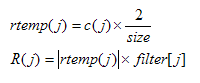
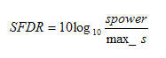
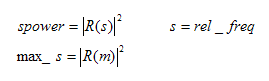
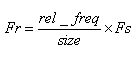

DSP_SFDR
The spurious-free dynamic range (SFDR) is the difference between the magnitude of the measured signal and its highest spur peak. This spur is typically a harmonic of the measured signal but does not have to be.
DSP_SFDR API computes the SFDR by calculating the ratio of the RMS value of the fundamental signal (sometimes also called the "carrier"), to the RMS value of the largest spectral component, excluding DC. The harmonics can be included or excluded from the SFDR calculation.
This API is defined in the header file /opt/hp93000/soc/prod_com/include/MAPI/libdsp.h.
Syntax
DSP_SFDR(ARRAY_I& src, DOUBLE *sfdr, INT rel_freq, INT n_harm, ARRAY_D& filter); DSP_SFDR(ARRAY_D& src, DOUBLE *sfdr, INT rel_freq, INT n_harm, ARRAY_D& filter); DSP_SFDR(INT *src, DOUBLE *sfdr, INT size, INT rel_freq, INT n_harm, DOUBLE *filter_array); DSP_SFDR(DOUBLE *src, DOUBLE *sfdr, INT size, INT rel_freq, INT n_harm, DOUBLE *filter_array);
I/O |
Parameter |
Description / Range |
|---|---|---|
I |
|
Source array
|
O |
|
Calculated SFDR value in decibels below carrier (dBc)
|
I |
size |
Number of elements to be processed This number must be a power of two: 8, 16, 32, ... 8 ≤ size ≤ 2097152 size ≤ size of source array |
I |
rel_freq |
Number of measured signal periods, which is used to calculate the relative frequency 1 ≤ rel_freq ≤ size/2 - 1 |
I |
n_harm |
Number of harmonics to be excluded from SFDR calculation n_harm = 0 or 2 ≤ n_harm ≤ size/2 - 1 Example: n_harm = 0 means all harmonics are included. n_harm = 3 means the 2nd and 3rd harmonics are excluded. |
I |
filter |
An array containing the filter transfer function. Each element corresponds to a result array element. 0 ≤ size of filter ≤ size/2 0: no filter (all filter elements are set to 1) |
Important points
- For the specified signal frequency (determined by rel_freq) in
src, this API computes spurious-free dynamic range (SFDR) in
decibels.
First, this function transforms the src values to COMPLEX values c(j) as follows:
DSP_FFT(src, c, size, RECT);
Then, for 1 ≤ j ≤ size/2 - 1, COMPLEX values rtemp(j) are calculated by adjusting COMPLEX values c(j).
R(j) is calculated by filtering (filter) as follows:

Finally, the values are calculated as follows:

where

where R(m) is the maximum spurious component, excluding DC and harmonics. When R(m) is calculated, the number of the excluded harmonics is decided by the n_harm parameter.
- If you specify 0 for the filter parameter, filtering is not performed, that is, in the R(j) equation given previously, filter [j] is set to 1.
- If n_harm ×rel_freq is greater than the highest frequency component (Nyquist frequency), the extra frequency components are folded back into the area less than the highest frequency component and taken into account when computing SFDR.
- The frequency Fr, which is the fundamental frequency for SFDR calculation, is defined as follows:

where Fs is the sampling frequency.
Example
double signal_array[1024]; double sfdr; . . DSP_SFDR(signal_array, &sfdr, 1024, 3, 5, 0);
This example processes the signal_array array which has 1024 elements and endures 3 signal periods to calculate SFDR. During the calculation, the 1st to 5th harmonics are excluded and no filter is used to process the result array. The result of SFDR is saved to the sfdr parameter.
Functional changes
- Introduced in SmarTest 6.5.2